Polishing plot output: labels, watermarks, and session options
Source:vignettes/a04-plot-output-and-options.Rmd
a04-plot-output-and-options.RmdIntroduction
A model diagnostic is rarely just a diagnostic once it leaves an R session. It becomes a figure in a report, and figures in reports want consistent titles, an obvious “this is a draft” stamp while a model is still in flux, and a predictable place to land on disk. Doing all of that by hand, plot-by-plot and model-by-model, gets old fast.
xpose.xtras adds a small, composable toolkit for this
last mile:
-
apply_default_labs()/set_default_labs()fill in (or overwrite) plot titles, subtitles, captions and tags. -
add_watermark()/set_default_watermark()stamp a plot with draft/preliminary/confidential-style text. -
ggsave_xp()saves a plot, applying the above first, with a swappable save backend. -
plot.xpose_data()/set_default_plots()generate a whole batch of diagnostic plots from onexpdbin a single call.
All four read from the same kind of layered defaults, resolved in the
same order every time: a session-wide R option, then a per-model
(xpdb) default, then whatever is passed directly to the
function call. set_xtras_options() and
get_xtras_option() round this out by giving the whole
xpose.xtras.* option family one place to be set and
inspected.
Once a default is actually configured, it applies itself.
print.xpose_plot() and ggsave_xp() both pick
up a configured default_labs/default_watermark
automatically, with nothing else to call. That behavior is controlled by
the xpose.xtras.auto_apply option, TRUE unless
changed; it’s a no-op until something is configured, so nothing changes
for existing code until a default is actually set. The functions below
are still the way to configure those defaults in the first place, apply
them explicitly on demand, or reach an xpdb-level default
(which, unlike the option, print() has no way to pick up on
its own; see the note under apply_default_labs()). The last
section, Automatic application,
covers the auto-apply behavior itself.
Default labels
apply_default_labs() takes a
ggplot/xpose_plot object and fills in any of
title/subtitle/caption/tag
that aren’t already set, using (in increasing precedence) the
xpose.xtras.default_labs option, an xpdb-level
default, and anything passed directly.
The simplest use is a session-wide option, handy for something that should apply to every plot in a script or report, like a draft caption:
options(xpose.xtras.default_labs = list(caption = "DRAFT: do not distribute"))
p <- dv_vs_ipred(xpdb_ex_pk, quiet = TRUE)
p_labelled <- apply_default_labs(p)
p_labelled
#> `geom_smooth()` using formula = 'y ~ x'
Because dv_vs_ipred() already sets its own caption, that
one wasn’t touched. apply_default_labs() only fills in
labels that are still empty. Passing overwrite = TRUE
replaces existing labels too, and the value can use the same
@keyword placeholders xpose::parse_title()
understands elsewhere in the package:
apply_default_labs(p, caption = "Run @run, @nobs observations", overwrite = TRUE)
#> `geom_smooth()` using formula = 'y ~ x'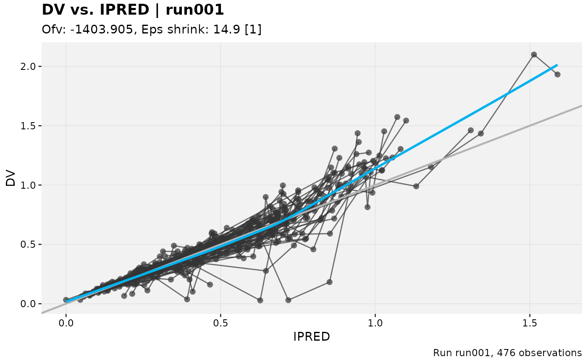
options(xpose.xtras.default_labs = NULL)A single global caption is a blunt instrument once more than one
model is in play. set_default_labs() attaches label
defaults to a specific xpdb instead, and those take
precedence over the option. This is useful when different models in the
same report need different framing:
xpdb_draft <- xpdb_x %>%
set_default_labs(caption = "Model @run, interim, subject to change")
dv_vs_ipred(xpdb_draft, quiet = TRUE) %>%
apply_default_labs(xpdb = xpdb_draft, overwrite = TRUE)
#> `geom_smooth()` using formula = 'y ~ x'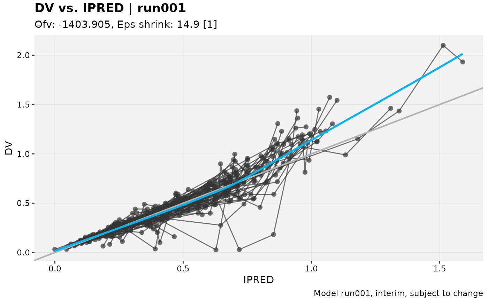
apply_default_labs() can’t reach back into the
xpdb a plot was built from on its own. xpose’s
plotting functions only carry a reduced summary forward onto the plot
object, not the full xpdb, so the xpdb
argument has to be supplied explicitly whenever the
xpdb-level tier (or @keyword resolution)
should be used. Whatever is passed directly to
apply_default_labs() still wins over both tiers:
dv_vs_ipred(xpdb_draft, quiet = TRUE) %>%
apply_default_labs(caption = "Final for submission", xpdb = xpdb_draft, overwrite = TRUE)
#> `geom_smooth()` using formula = 'y ~ x'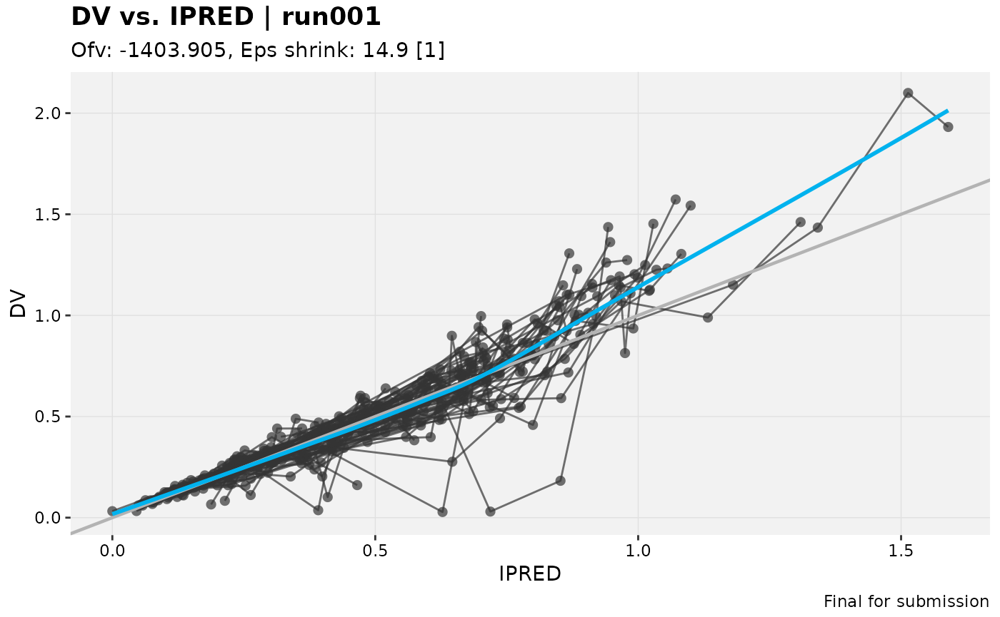
Watermarks
add_watermark() overlays large, semi-transparent,
rotated text across a plot, the kind of stamp that makes it obvious at a
glance that a figure isn’t final yet.
p %>%
add_watermark()
#> `geom_smooth()` using formula = 'y ~ x'
label, colour, alpha,
size, angle and fontface are all
adjustable:
p %>%
add_watermark(label = "PRELIMINARY", colour = "firebrick", alpha = 0.15, angle = 20)
#> `geom_smooth()` using formula = 'y ~ x'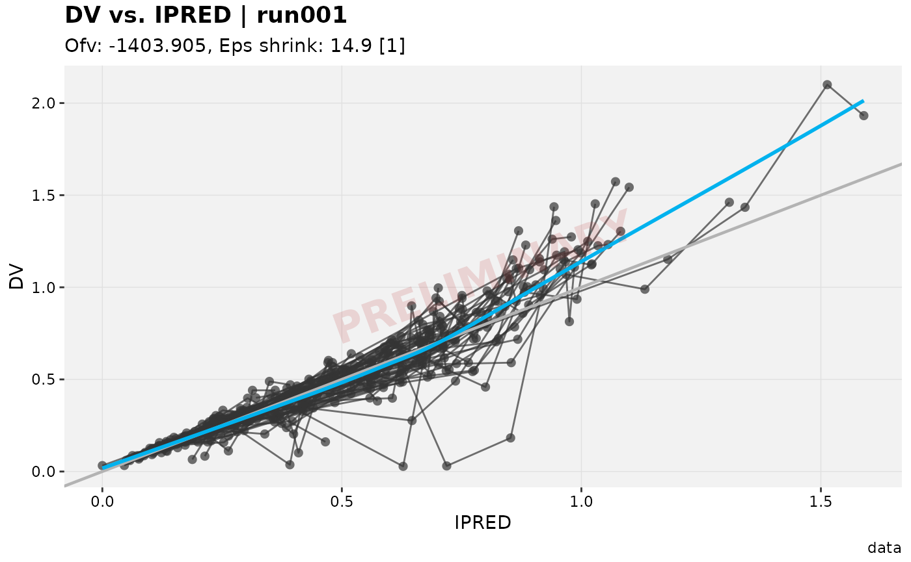
The watermark is added as an ordinary ggplot2 layer, so
it survives faceting and pagination: one watermark per panel,
automatically:
dv_vs_ipred(xpdb_ex_pk, quiet = TRUE, facets = "SEX") %>%
add_watermark(label = "DRAFT")
#> `geom_smooth()` using formula = 'y ~ x'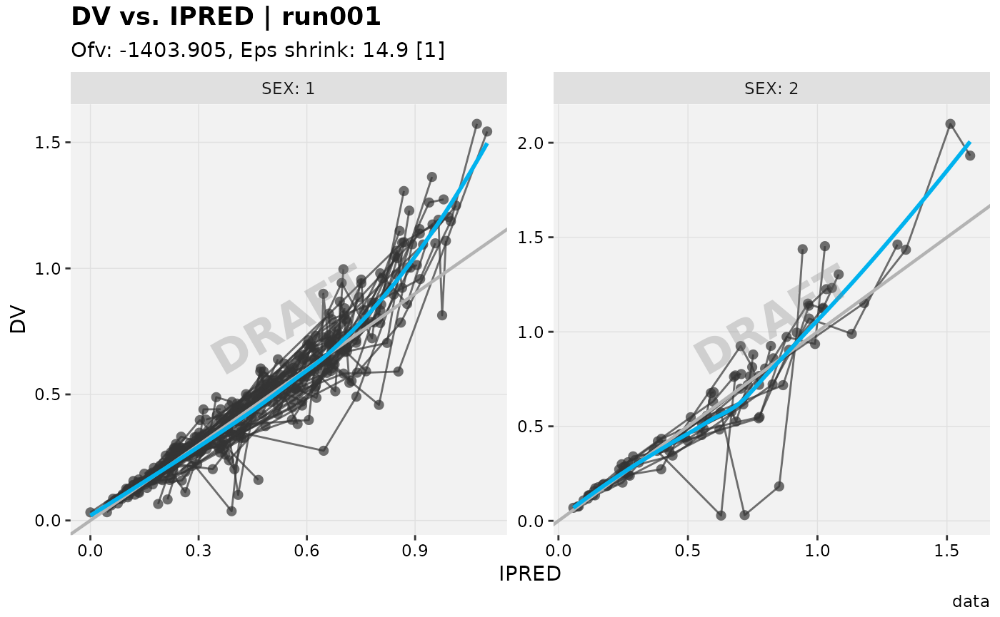
Because the watermark is drawn at a fixed rotation, it can visually
merge into a plot that already has a strong diagonal of its own, like
the line of unity on a dv_vs_pred() plot. The default 30
degree angle sits close to that line and gets lost among the points
around it:
pred_plot <- dv_vs_pred(xpdb_ex_pk, quiet = TRUE)
pred_plot %>%
add_watermark(alpha = 0.6)
#> `geom_smooth()` using formula = 'y ~ x'Crossing the other way keeps the watermark clearly legible instead,
without competing with the plot’s own diagonal. This is exactly the kind
of case angle (and
alpha/size/colour) exist for:
pred_plot %>%
add_watermark(alpha = 0.6, angle = -45)
#> `geom_smooth()` using formula = 'y ~ x'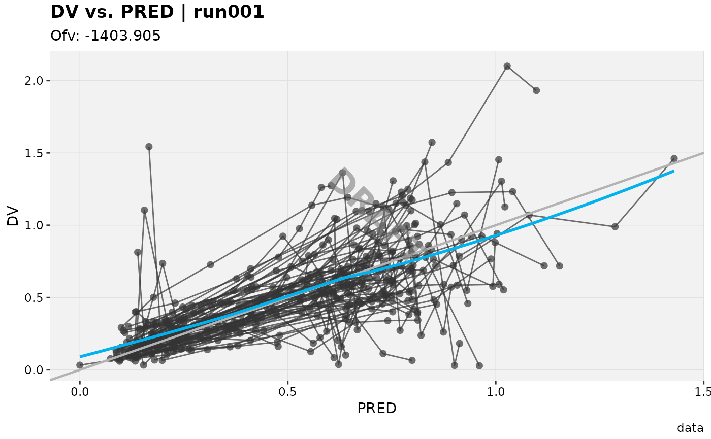
Like the label functions, watermark settings resolve from the
xpose.xtras.default_watermark option, then an
xpdb-level default set with
set_default_watermark(), then whatever is passed directly.
A whole project can default to, say, a red “CONFIDENTIAL” stamp without
repeating those arguments at every call site:
options(xpose.xtras.default_watermark = list(label = "CONFIDENTIAL", colour = "firebrick"))
p %>%
add_watermark()
#> `geom_smooth()` using formula = 'y ~ x'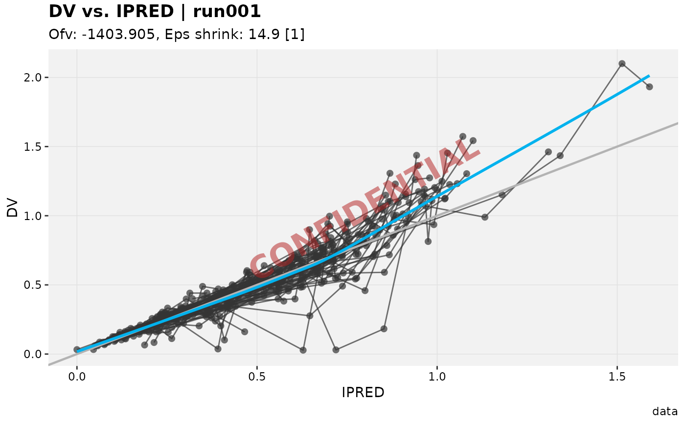
options(xpose.xtras.default_watermark = NULL)Generating a batch of plots with plot()
Building a standard set of diagnostics for a model usually means
calling several plotting functions one after another, then doing it all
again for the next model. plot.xpose_data() (an S3 method
for the base plot() generic) runs a whole list of
plot-generating calls in one go and returns them as a flat, named
list.
Called with no plots argument, it runs this package’s
built-in default battery: dv_vs_ipred,
dv_vs_pred, res_vs_idv,
res_vs_pred, eta_distrib,
eta_grid, eta_vs_cov_grid, and
ind_plots_sample.
default_plots <- plot(xpdb_x, quiet = TRUE)
#> Using data from $prob no.1
#> Filtering data by EVID == 0
#> Using data from $prob no.1
#> Filtering data by EVID == 0
#> Using data from $prob no.1
#> Filtering data by EVID == 0
#> Using data from $prob no.1
#> Filtering data by EVID == 0
#> Using data from $prob no.1
#> Removing duplicated rows based on: ID
#> Tidying data by ID, SEX, MED1, MED2, DOSE ... and 23 more variables
#> Using data from $prob no.1
#> Removing duplicated rows based on: ID
#> Using data from $prob no.1
#> Removing duplicated rows based on: ID
#> Using data from $prob no.1
#> Filtering data by EVID == 0
#> Tidying data by ID, SEX, MED1, MED2, DOSE ... and 23 more variables
names(default_plots)
#> [1] "dv_vs_ipred" "dv_vs_pred" "res_vs_idv" "res_vs_pred"
#> [5] "eta_distrib" "eta_grid" "eta_vs_cov_grid" "ind_plots_sample"
default_plots$dv_vs_ipred
#> `geom_smooth()` using formula = 'y ~ x'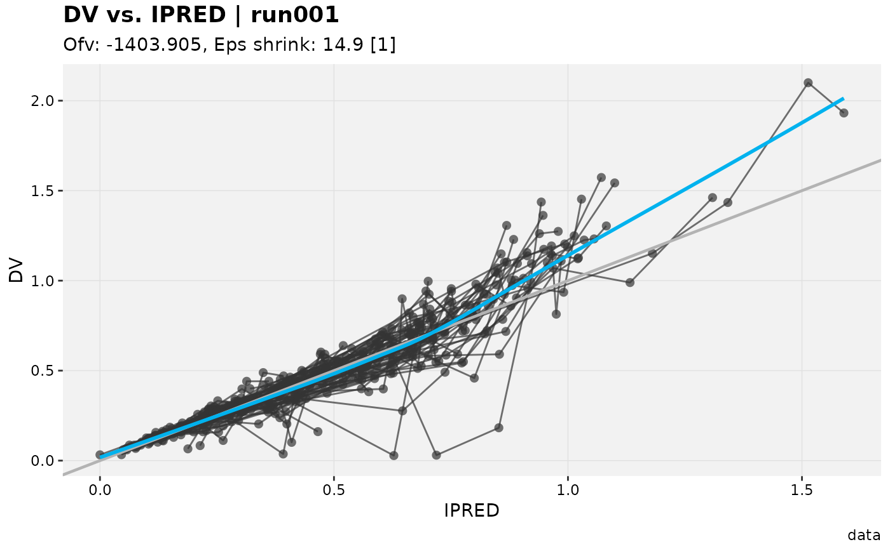
A custom plots list can mix bare functions and one-sided
formulas in the ~ fn(.x) idiom used elsewhere in this
package (see focus_function()). The formula form lets extra
arguments be baked straight into the call, which is also how the same
underlying plot function can appear more than once with different
options:
custom_plots <- plot(
xpdb_x,
plots = list(
xpose::dv_vs_ipred,
~ xpose::res_vs_idv(.x, res = "CWRES"),
~ xpose::res_vs_idv(.x, res = "IWRES")
),
quiet = TRUE
)
#> Using data from $prob no.1
#> Filtering data by EVID == 0
#> Using data from $prob no.1
#> Filtering data by EVID == 0
#> Using data from $prob no.1
#> Filtering data by EVID == 0
names(custom_plots)
#> [1] "plot_1" "xpose::res_vs_idv...2" "xpose::res_vs_idv...3"If a single entry itself returns a list of plots, that list is flattened into the overall output rather than kept nested, so the result is always a flat list regardless of what any one entry produces.
A failing plot, by default, aborts the whole call immediately
(showing the original error as its cause) without returning anything –
useful when a batch of plots feeds directly into a report and a silent
gap would be worse than stopping early. Passing
force = TRUE instead turns a failure into a warning and
skips just that entry, so the rest of plots still gets a
chance to run:
flaky_plots <- plot(
xpdb_x,
plots = list(
xpose::dv_vs_ipred,
~ stop("simulated failure"),
xpose::eta_distrib
),
force = TRUE,
quiet = FALSE
)
#> Using data from $prob no.1
#> Filtering data by EVID == 0
#> Warning: Failed to generate the "stop" plot (2 of 3); skipping.
#> Caused by error in `fn()`:
#> ! simulated failure
#> Using data from $prob no.1
#> Removing duplicated rows based on: ID
#> Tidying data by ID, SEX, MED1, MED2, DOSE ... and 23 more variables
#> ! 1 of 3 plot(s) failed and was skipped: "stop"
names(flaky_plots)
#> [1] "plot_1" "plot_3"Like default_labs/default_watermark, a
project-wide plots spec can be set once via the
xpose.xtras.default_plots session option (see
set_xtras_options()), or attached to a specific
xpdb with set_default_plots(), which takes
precedence over the option. Unlike those two, though, this default is
resolved as a whole rather than merged entry by entry – a plot spec’s
entries aren’t addressable by a stable key, since the same function can
legitimately appear more than once:
xpdb_custom <- set_default_plots(xpdb_x, list(~ xpose::dv_vs_ipred(.x), ~ xpose::eta_distrib(.x)))
names(plot(xpdb_custom, quiet = TRUE))
#> Using data from $prob no.1
#> Filtering data by EVID == 0
#> Using data from $prob no.1
#> Removing duplicated rows based on: ID
#> Tidying data by ID, SEX, MED1, MED2, DOSE ... and 23 more variables
#> [1] "xpose::dv_vs_ipred" "xpose::eta_distrib"Saving with ggsave_xp()
ggsave_xp() is a drop-in,
ggplot2::ggsave()-compatible way to write a plot to disk:
same
plot/filename/path/width/height
arguments, but it applies
apply_default_labs()/add_watermark() first
(apply_labs/apply_watermark, more on those in
Automatic application), and
path/width/height fall back to
the
xpose.xtras.save_dir/save_width/save_height
options when not supplied.
out_dir <- tempdir()
saved_path <- ggsave_xp(p, filename = "dv_vs_ipred.png", path = out_dir, width = 6, height = 4)
#> `geom_smooth()` using formula = 'y ~ x'
basename(saved_path)
#> [1] "dv_vs_ipred.png"That’s a real file on disk. Here’s what actually got written:
#> [1] TRUE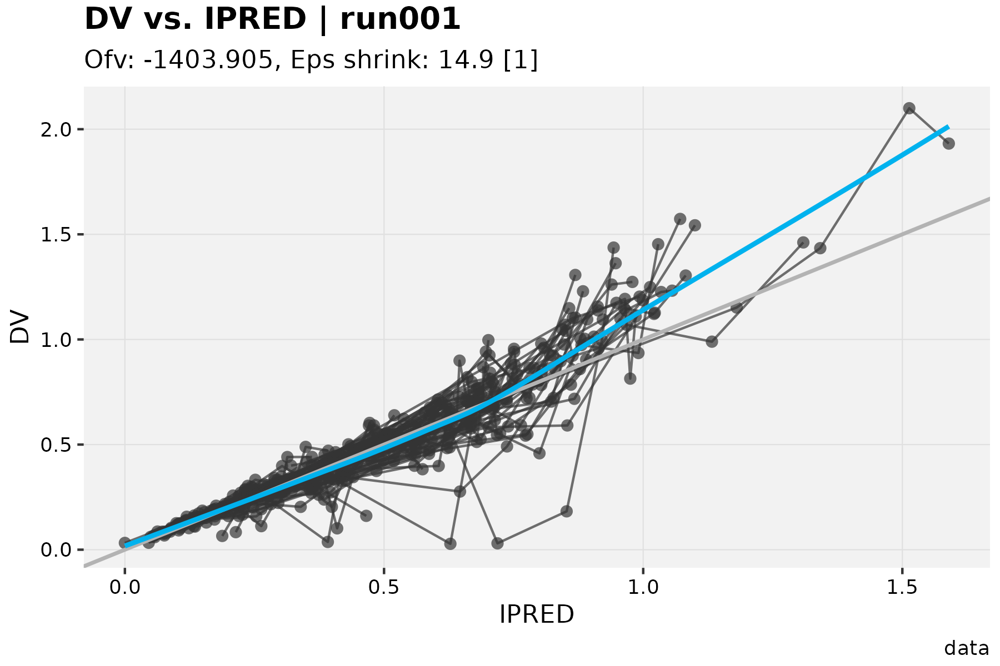
filename/path can also use
@keyword placeholders, expanded the same way
xpose::xpose_save() does it:
run_path <- ggsave_xp(dv_vs_ipred(xpdb_ex_pk, quiet = TRUE), filename = "@run_@plotfun.png", path = out_dir)
#> `geom_smooth()` using formula = 'y ~ x'
basename(run_path)
#> [1] "run001_dv_vs_ipred.png"What actually does the saving is itself swappable, via
save_fun. The default is ggplot2::ggsave(),
but anything sharing its signature works, including third-party wrappers
like reportifyr::ggsave_with_metadata(). As a
self-contained illustration, so this vignette doesn’t need to depend on
a third-party package just to demonstrate the idea, here’s a
save_fun that writes a plain-text note alongside the
image:
save_with_note <- function(plot, filename, path = NULL, width, height, note = "", ...) {
saved <- ggplot2::ggsave(filename = filename, plot = plot, path = path, width = width, height = height, ...)
writeLines(note, sub("\\.[^.]+$", ".txt", saved))
saved
}
annotated_path <- ggsave_xp(
p, filename = "dv_vs_ipred_annotated.png", path = out_dir,
save_fun = save_with_note, note = "Generated for the Q3 interim analysis."
)
#> `geom_smooth()` using formula = 'y ~ x'
# the .png was written by ggplot2::ggsave() as usual; the .txt is new
readLines(sub("\\.png$", ".txt", annotated_path))
#> [1] "Generated for the Q3 interim analysis."Any function accepting
plot/filename/path/width/height
(plus whatever else it needs via ...) can be dropped in
this way. There’s nothing xpose.xtras-specific about
save_fun itself.
Automatic application
Everything above can be called explicitly, but it doesn’t have to be.
Once a default_labs/default_watermark is
actually configured, at the option level, as in the examples so far,
print.xpose_plot() and ggsave_xp() apply it on
their own:
options(
xpose.xtras.default_labs = list(caption = "DRAFT: do not distribute"),
xpose.xtras.default_watermark = list(label = "DRAFT")
)
dv_vs_ipred(xpdb_ex_pk, quiet = TRUE)
#> `geom_smooth()` using formula = 'y ~ x'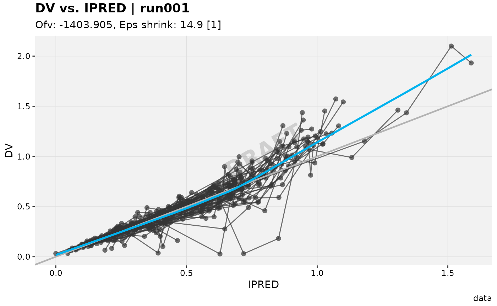
No apply_default_labs(), no
add_watermark(), just an ordinary
dv_vs_ipred() call, printed the ordinary way. This is
exactly what happens when a plot auto-prints at the console or in a
knitted report. It’s controlled by the
xpose.xtras.auto_apply option, TRUE unless
changed. Note that it’s the configured default that’s applied
automatically, not an unconditional one: with
default_watermark left unset,
auto_apply = TRUE would not stamp a “DRAFT” on every plot
on its own. It’s purely “apply what was already configured, without
asking again.”
To turn this off everywhere at once:
options(xpose.xtras.auto_apply = FALSE)
dv_vs_ipred(xpdb_ex_pk, quiet = TRUE)
#> `geom_smooth()` using formula = 'y ~ x'
Or, to opt out for one ggsave_xp() call without touching
the option, pass
apply_labs = FALSE/apply_watermark = FALSE
directly to that call.
Either way, this only ever reaches the session-wide option tier.
print() has no way to receive the xpdb a plot
was built from, so an xpdb-level default (set via
set_default_labs()/set_default_watermark())
still needs
apply_default_labs()/add_watermark(), or
ggsave_xp()’s xpdb argument, called
explicitly. Auto-apply covers the common “one default for the whole
session” case, not the per-model one.
Tying it together with session options
Setting several of the options above one at a time is easy to get
wrong: a typo in an option name just silently does nothing, since
options() doesn’t validate names.
set_xtras_options() is a small, validated wrapper for the
whole xpose.xtras.* family (prefix added automatically),
good for pinning a project’s defaults once at the top of a script:
set_xtras_options(
default_labs = list(caption = "DRAFT"),
default_watermark = list(label = "DRAFT"),
save_dir = tempdir(),
save_width = 6,
save_height = 4
)
# labels and watermark are auto-applied, and save_dir/save_width/save_height
# supply filename's path/width/height: one call, nothing else configured
saved_together <- ggsave_xp(dv_vs_ipred(xpdb_ex_pk, quiet = TRUE), filename = "tied_together.png")
#> `geom_smooth()` using formula = 'y ~ x'
basename(saved_together)
#> [1] "tied_together.png"#> [1] TRUE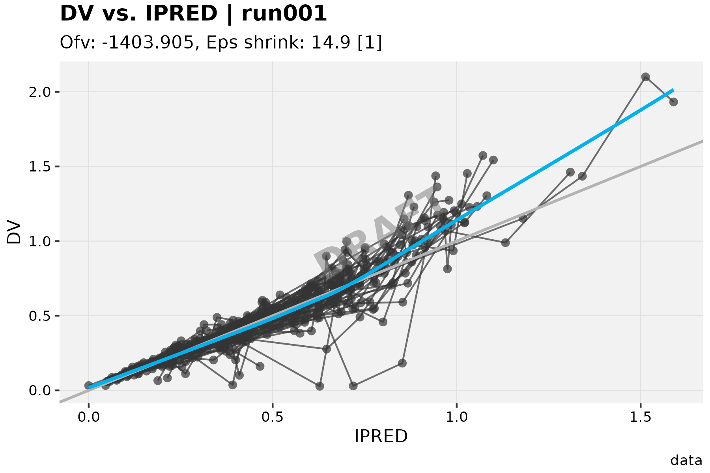
The same family also covers a session-wide default theme,
gg_theme/xp_theme, picked up automatically the
first time an xpose_data object is converted with
as_xpdb_x(). A project look can be set once instead of
calling xpose::update_themes() on every model:
set_xtras_options(gg_theme = theme_bw)
xpdb_ex_pk %>%
as_xpdb_x() %>%
dv_vs_ipred(quiet = TRUE)
#> `geom_smooth()` using formula = 'y ~ x'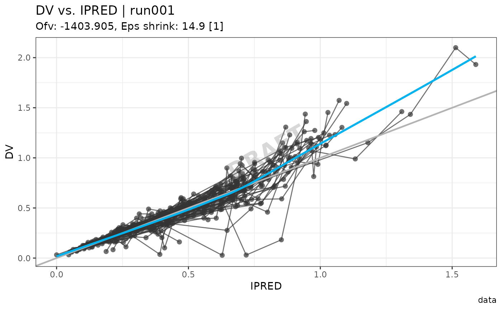
get_xtras_option() reports, for a given option and
(optionally) a specific xpdb, what’s currently set at each
tier and which one would win:
xpdb_labelled <- xpdb_x %>%
set_default_labs(caption = "Model-specific caption")
get_xtras_option("default_labs", xpdb_labelled)
#> $option
#> $option$caption
#> [1] "DRAFT"
#>
#>
#> $xpdb
#> $xpdb$caption
#> [1] "Model-specific caption"
#>
#>
#> $dominant
#> [1] "xpdb"The full list of recognized options, what each one does, and which
ones have an xpdb-level counterpart, is documented on
?set_xtras_options.